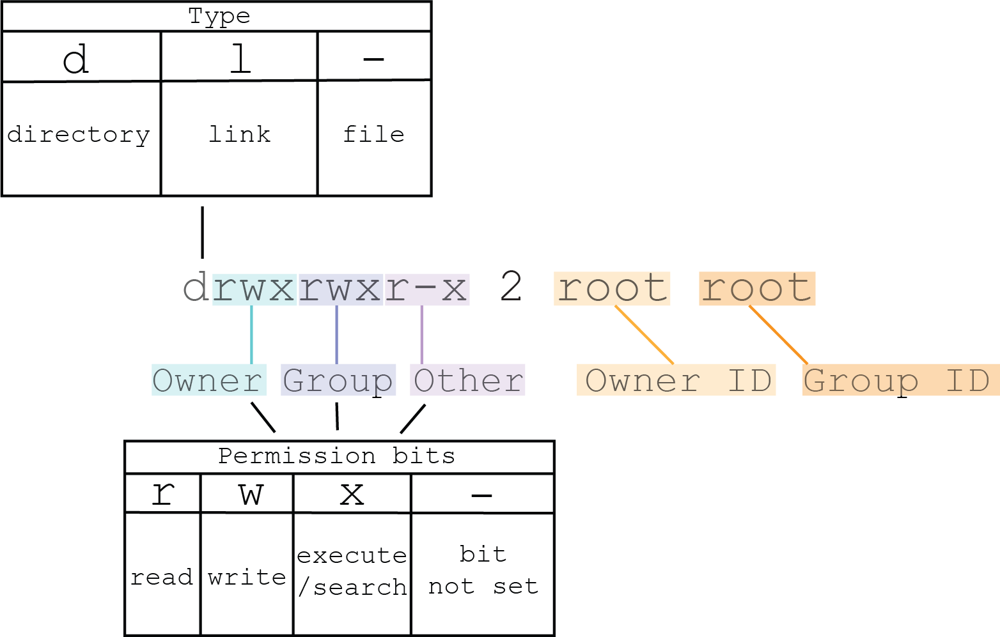

Access control is the selective restriction of access to a resource. Access controls take many different forms and the sections below describe which ones can be used in QNX OS systems.
You can use umask to remove permissions when a file is created and apply this behavior system-wide. For information, see umask() in the C Library Reference and umask in the Utilities Reference.
POSIX permissions are the mechanism by which access permissions can be set on a resource. For example, the owner of a file in POSIX can assign read, write, and execute permissions for themselves, groups, and others accessing the file. POSIX permissions work in conjunction with the process UID and GID values including supplementary GIDs (referred to as SGIDs or groups). POSIX permissions are always present in a QNX OS system and are not optional.
You can view POSIX permissions in the output of the ls -l command on a directory. For example:
# ls -la / total 1797040 drwxrwxr-x 12 root root 4096 Jun 02 16:17 . drwxrwxr-x 12 root root 4096 Jun 02 16:17 .. drwx------ 2 root root 4096 Jun 02 16:17 .boot drwxrwxr-x 2 root root 4096 Jun 02 16:17 bin dr-xr-xr-x 2 root root 0 Jun 02 17:11 dev drwxr-xr-x 5 root root 4096 Jun 02 17:00 etc drwxr-xr-x 3 root root 4096 Jun 02 16:17 home drwxr-xr-x 3 root root 4096 Jun 02 16:17 lib dr-xr-xr-x 2 root root 920035328 Jun 02 17:11 proc drwx------ 2 root root 4096 Jun 02 16:17 root drwxrwxr-x 2 root root 4096 Jun 02 16:17 sbin drwxrwxrwx 2 root root 4096 Jun 02 16:17 tmp drwxr-xr-x 7 root root 4096 Jun 02 16:17 usr drwxr-xr-x 5 root root 4096 Jun 02 16:17 var
The diagram below explains some of the fields related to POSIX permissions in the output above (mainly columns 1, 3, and 4).

For more information, see File ownership and permissions
in the User's
Guide
Access control lists (ACLs) are a form of finer grained and supplementary access control that can be granted on files, directories and other ephemeral system objects like resource manager paths. They can also serve as a way to dynamically apply POSIX permissions based on system settings and control decisions (like granting third-party services and applications access to system resources). This is controlled at runtime using the setfacl utility or programmatically with acl_set_file() or acl_set_fd(). For example:
# ls -l ntp.conf -rw-r--r-- 1 root root 0 Feb 06 15:14 ntp.conf # setfacl -m user:99:rw- ntp.conf # ls -l total 0 -rw-rw-r--+ 1 root root 0 Feb 06 15:14 ntp.conf
Note that this output has added the Extra bit (‘+’) on the end of the permissions to indicate that there is additional access control information. The Extra bit is a single character that specifies whether an alternate access method applies to the file. When this character is a space, there is no alternate access method. To inspect the information, use getfacl. For example:
# getfacl ntp.conf # file: ntp.conf # owner: root # group: root user::rw- user:99:rw- group::r-- mask::rw- other::r--
Only root or the owner of a file can change its ACLs. (For information on setting ACLs for resources, see acl_set_file() in the C Library Reference or setfacl in the Utilities Reference.
ACL support is usually non-persistent; however, the Power-Safe Filesystem (QNX6) and the QNX Compressed Filesystem (QCFS) support persistent ACLs. Some other filesystems that QNX OS supports do not have ACL support.
It's important to verify the ownership and permissions of resource manager mount points. These resources are usually paths under /dev, but they can be anywhere.
A few resource managers provide command line options to set permissions, but many do
not. If resource managers use secpol_resmgr_attach() to establish
mount points, the permissions and ownership can be set via a security policy. For
more information, go to
Setting ownership
and permissions for mount points
in the Security policy
language
section.
If a system uses security policies, you can use secpolgenerate to identify resource managers that use secpol_resmgr_attach(). Although a policy generated by secpolgenerate can't assign permissions and ownership, it does indicate as comments any mount points that can be configured via secpol_resmgr_attach().
If the resource manager does not provide any method for adjusting ownership or permissions, they might have to be changed manually after starting the resource manager using one or more of the chown, chmod, or setfacl commands.
Do not make a program setuid unless it was explicitly designed to be run this way.
Consider using pathtrust to prevent setuid programs being run from untrusted
file systems. See Pathtrust
.
For more information, see the PAM
chapter.
POSIX permissions can restrict what files a process can read and the directories it can access files in. If these permissions are incorrect, they can prevent a process from opening all the files that it needs access to. On systems that use security policies, the security policies generation process may overcome this problem by giving a process the iofunc/read ability (allows read access to all files), the iofunc/exec ability (grants search access for all directories), or both. There are very few cases where giving a process this kind of broad access is warranted and it might represent a security issue.
You can use secpol-preload.so to help you discover the paths that might generate too-permissive abilities. When this library is loaded, it generates system trace events that indicate that file access requires either iofunc/read or iofunc/exec.
LD_PRELOAD=secpol-preload.so
POSIX permissions)
Access control lists (ACLs))
For more information about generating and monitoring security policies, see the Security Policies
chapter.